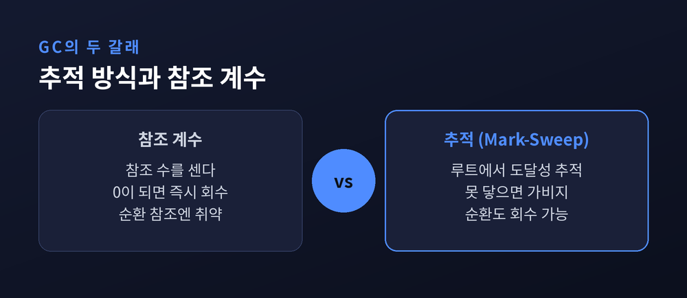
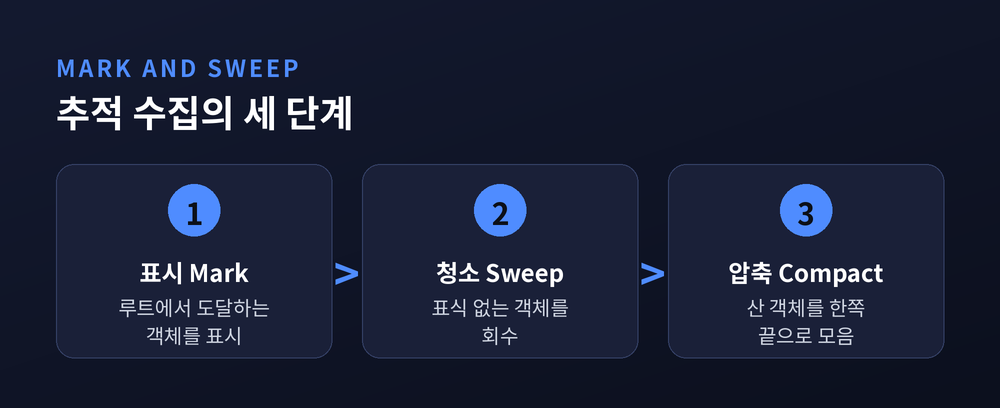
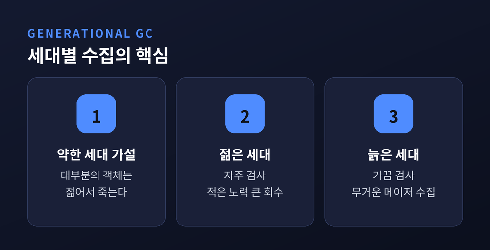
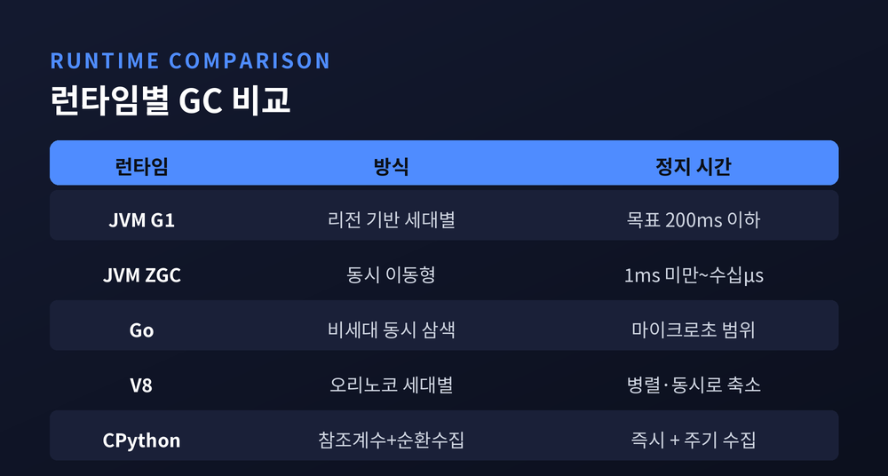

이번 글에서는 가비지 컬렉션(garbage collection)이 어떤 원리로 동작하는지 정리해 보겠습니다.
먼저 핵심부터 말씀드립니다. 가비지 컬렉션은 마법이 아니라, "이 메모리에 아직 닿을 수 있는가"를 따지는 단순한 질문의 반복입니다. 프로그램이 더 이상 도달할 수 없게 된 객체를 런타임이 알아서 찾아 회수하는 것, 그것이 전부입니다.
이 글에서는 회수의 판단 기준부터 두 갈래의 근본 알고리즘, 세대별 전략과 압축, 그리고 자바·Go·자바스크립트·파이썬이 이를 어떻게 다르게 구현했는지까지 차례로 살펴보겠습니다.
프로그램은 실행 중에 힙(heap)이라는 메모리 공간에 객체를 계속 쌓아 올립니다.
문제는 그중 상당수가 곧 쓸모를 잃는다는 점입니다. 쓸모를 잃은 객체가 자리를 계속 차지하면 메모리 누수가 됩니다.
그렇다면 무엇이 쓸모없는 객체일까요. 가비지 컬렉터의 대답은 하나입니다. "루트에서 출발해 참조를 따라갔을 때 닿을 수 없는 객체."
여기서 루트(roots)란 무조건 살아있다고 보장되는 시작점을 말합니다. 스택에 놓인 지역 변수, 전역 변수, CPU 레지스터 같은 것들입니다. 이 시작점에서 참조의 사슬을 따라가 닿을 수 있으면 살아있는 객체이고, 아무리 따라가도 닿지 못하면 가비지입니다.
원리는 이렇게 간명합니다. 어려움은 "닿을 수 있는가"를 언제, 어떻게, 얼마나 자주 확인하느냐에 있습니다.
메모리를 자동으로 회수하는 방법은 크게 두 갈래로 나뉩니다. 참조 계수와 추적입니다.
참조 계수(reference counting)는 각 객체가 "나를 가리키는 참조가 몇 개인지"를 숫자로 들고 있는 방식입니다. 참조가 생기면 하나 늘고, 사라지면 하나 줄어듭니다. 이 숫자가 0이 되는 순간 객체는 즉시 회수됩니다. 죽는 즉시 치우니 예측이 쉽고, 긴 멈춤이 없습니다.
다만 치명적인 약점이 있습니다. 순환 참조입니다. A가 B를 가리키고 B가 다시 A를 가리키면, 바깥에서 아무도 둘을 쓰지 않아도 서로의 카운트를 1로 붙들어 영영 0이 되지 않습니다. 그렇게 둘은 회수되지 못한 채 남습니다.
추적(tracing) 방식은 접근이 다릅니다. 흔히 마크 앤 스위프(mark-and-sweep)라 부릅니다. 주기적으로 루트에서 출발해 살아있는 객체를 전부 추적해 표시한 뒤, 표시되지 않은 것을 쓸어 담습니다. 도달 가능성만 보기 때문에, 순환이든 아니든 루트에서 못 닿으면 가차 없이 가비지로 분류됩니다. 참조 계수가 풀지 못한 순환 문제를 추적은 자연히 넘어섭니다.
흥미롭게도 두 방식은 서로의 거울상입니다. 추적은 살아있는 것을 좇고, 참조 계수는 죽는 것을 헤아립니다.

추적 방식의 뼈대를 조금 더 들여다보겠습니다. 크게 두 단계입니다.
첫째는 표시(mark) 단계입니다. 루트에서 출발해 참조를 타고 들어가며, 도달하는 모든 객체에 "살아있음" 표식을 붙입니다.
둘째는 청소(sweep) 단계입니다. 힙 전체를 훑으며 표식이 없는 객체를 회수하고, 다음 순환을 위해 표식을 지웁니다.
단순한 구현에는 대가가 따릅니다. 표시하는 동안 객체 그래프가 바뀌면 안 되므로, 프로그램의 실행을 잠시 멈춰야 합니다. 이것이 이른바 '스톱 더 월드(stop-the-world)'입니다. 힙이 클수록 이 멈춤은 길어지고, 사용자에게는 끊김으로 느껴집니다.
이 멈춤을 줄이려는 대표적 궁리가 삼색 표시(tri-color)입니다. 객체를 세 색으로 나눕니다. 아직 손대지 않은 흰색, 표시는 했으나 그 객체가 가리키는 곳은 아직 못 본 회색, 표시와 탐색이 모두 끝난 검은색입니다. 회색이 하나도 남지 않으면 마킹이 끝나고, 흰색으로 남은 것이 가비지입니다. 이 구도 덕분에 프로그램과 수집기가 어느 정도 동시에 돌 수 있습니다. 1978년 다익스트라가 제안한 오래된 아이디어입니다.

수집기가 매번 힙 전체를 뒤진다면 낭비가 큽니다. 여기서 하나의 경험칙이 등장합니다.
'약한 세대 가설(weak generational hypothesis)'입니다. 대부분의 객체는 젊어서 죽고, 오래 살아남은 객체는 계속 오래 산다는 관찰입니다.
이 가설을 받아들이면 전략이 분명해집니다. 힙을 나이로 나누는 것입니다. 새 객체는 '젊은 세대'에 두고 자주 검사합니다. 젊은 세대에서 살아남기를 반복한 객체는 '늙은 세대'로 승격시켜 어쩌다 한 번만 검사합니다.
효율은 여기서 나옵니다. 젊은 객체를 수집하면 대개 대부분이 이미 죽어 있어, 적은 노력으로 많은 메모리를 되찾습니다. 젊은 세대만 비우는 것을 마이너 수집, 늙은 세대까지 포함해 힙 전체를 비우는 것을 메이저 수집이라 부릅니다. 무거운 메이저 수집을 되도록 미루는 것이 세대별 GC의 핵심입니다.

회수만으로는 부족한 문제가 하나 더 있습니다. 단편화(fragmentation)입니다.
할당과 회수를 반복하면 힙 곳곳에 자잘한 빈 구멍이 생깁니다. 전체 여유 공간은 넉넉해도, 큰 객체를 담을 연속된 자리가 없어 할당이 실패할 수 있습니다.
해법은 압축(compaction)입니다. 수집이 끝날 무렵 살아있는 객체를 힙 한쪽 끝으로 몰아붙여 구멍을 메웁니다. 그러면 빈 공간이 한 덩어리로 모여, 포인터를 끝으로 밀기만 해도 되는 가장 빠른 할당이 가능해집니다.
복사 수집(copying)은 이를 좀 더 과감하게 해냅니다. 메모리를 두 반쪽으로 나눠 두고, 수집 때 살아있는 객체만 반대쪽으로 옮겨 심습니다. 옮기는 과정에서 저절로 한곳에 모이니 압축이 공짜로 따라옵니다. 대신 언제나 절반을 비워 둬야 하므로 공간을 넉넉히 씁니다. 얻는 것이 있으면 내주는 것도 있는 셈입니다.
같은 원리를 두고도 런타임은 저마다 다른 균형점을 잡았습니다.
자바(JVM)에는 여러 수집기가 있습니다. 범용 기본값인 G1 GC는 힙을 여러 리전으로 나눠 관리하며, 기본 정지 목표를 200밀리초로 두고 그 아래를 유지합니다. 초저지연을 노린 ZGC는 정지 시간을 1밀리초 아래로 끌어내리고, 객체 이동과 참조 갱신마저 멈춤 없이 처리합니다. 자바 21의 세대별 ZGC에 이르면 지연이 마이크로초 단위로 내려가, 관측된 최장 정지가 약 50마이크로초 수준으로 보고되기도 했습니다. 대신 ZGC는 CPU를 더 씁니다.
Go는 다른 길을 갔습니다. 세대를 나누지 않는 동시 삼색 마크 스위프 수집기로, 스톱 더 월드를 대개 마이크로초 범위로 줄였습니다. GOGC 값 하나로 결을 조절합니다. 기본값 100은 직전 수집 후 살아남은 힙이 두 배로 불어날 때 다음 수집을 시작한다는 뜻입니다.
자바스크립트 엔진 V8은 오리노코(Orinoco)라는 이름의 수집 파이프라인을 씁니다. 젊은 세대는 스캐빈저가 반공간 복사로 빠르게 훑고, 늙은 세대는 마크-스위프-컴팩트로 정리합니다. 병렬 스캐빈저는 젊은 세대 수집의 메인 스레드 시간을 워크로드에 따라 약 20~50퍼센트 줄였습니다.
파이썬(CPython)은 두 방식을 겹쳐 씁니다. 바탕은 참조 계수이고, 참조 계수가 잡지 못하는 순환만 따로 처리하는 세대별 수집기를 얹었습니다. 참조 계수는 끌 수 없는 기본 장치이고, 순환 수집기는 필요하면 손수 끄거나 돌릴 수 있습니다.

가비지 컬렉션에 관한 흔한 오해 하나를 짚겠습니다. "GC가 있으니 메모리 누수는 없다"는 믿음입니다.
그렇지 않습니다. 도달 가능한 객체는 수집되지 않습니다. 전역 캐시나 해제하지 않은 리스너처럼, 더 쓰지 않으면서도 참조만 붙들고 있으면 수집기는 그것을 살아있다고 판단합니다. 논리적 누수는 여전히 개발자의 몫으로 남습니다.
예전에는 메모리를 손으로 해제하며 실수와 씨름했습니다. 지금은 그 수고를 런타임에 맡깁니다. 그러나 "무엇을 계속 붙들고 있는가"라는 질문까지 넘긴 것은 아닙니다.
정리하면 이렇습니다.
가비지 컬렉션의 원리는 도달 가능성이라는 한 문장으로 압축됩니다. 참조 계수와 추적, 세대별 전략과 압축은 모두 "닿을 수 없는 것을 언제 어떻게 치울까"에 대한 서로 다른 대답이었습니다.
"회수의 기준은 언제나 하나, 아직 닿을 수 있는가입니다."
원리를 알고 나면, 내 코드가 무심코 붙들고 있는 참조 하나가 다르게 보이기 시작합니다.